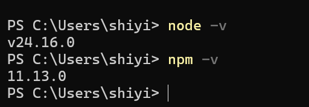
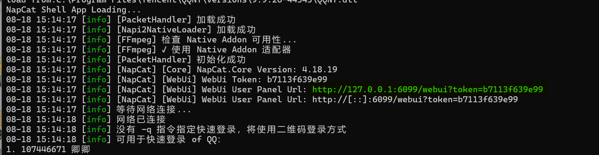
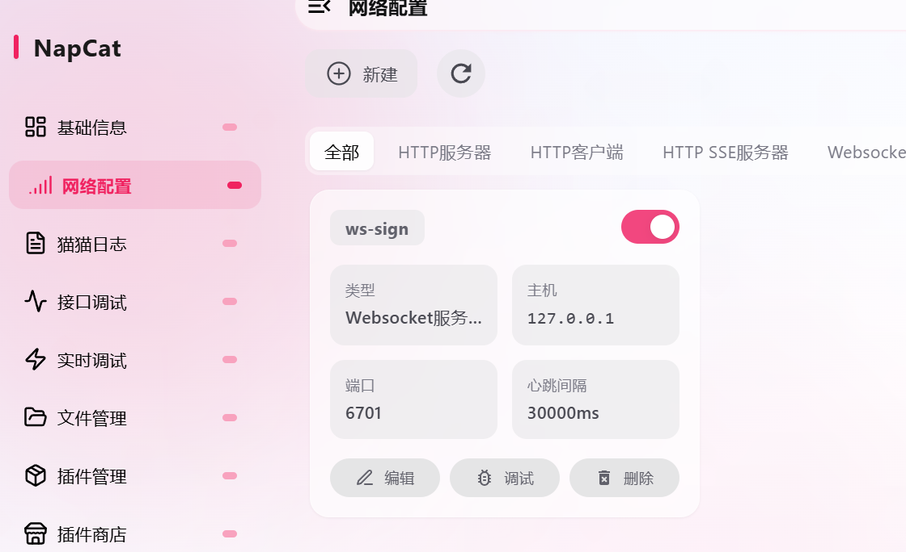
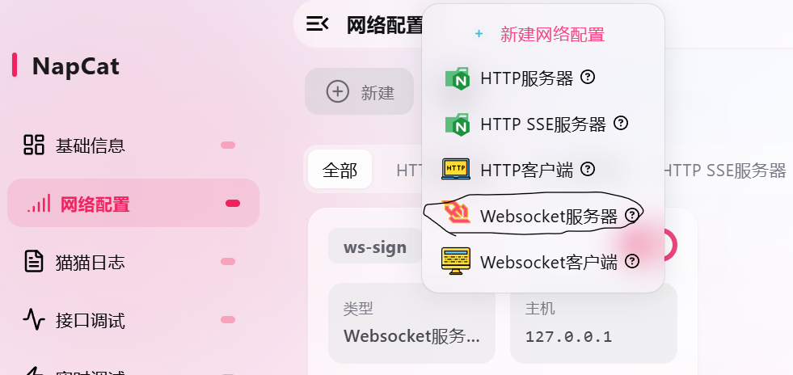
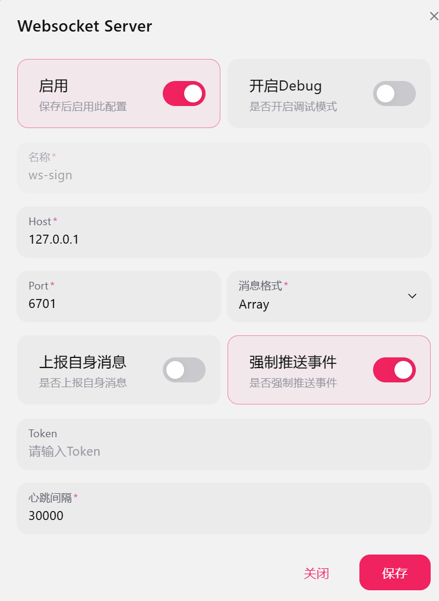
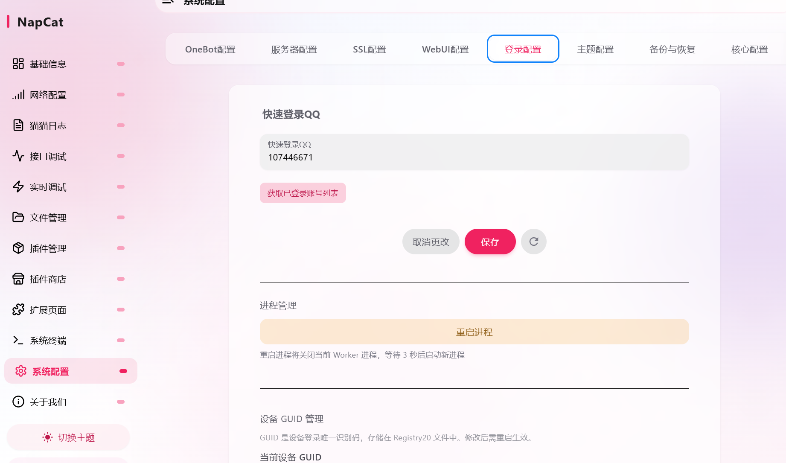
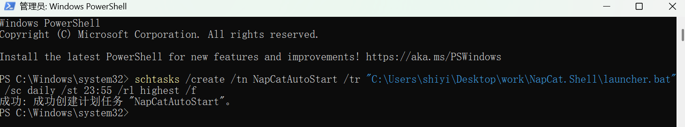

node -v
npm -v
http://127.0.0.1:<端口>/webui?token=<token>（下图中绿色的部分，直接Ctri+c Ctri+v复制到浏览器）。



Test-NetConnection 127.0.0.1 -Port 6701TcpTestSucceeded : True 表示端口已就绪。-q <QQ号> 参数在 Shell 版启动器中会被丢弃（注入环节丢失），首次扫码成功后登录态保留，之后设置快速登陆（不必每次登陆扫码）在"系统配置 → 快速登录QQ"里指定账号：
win+r,输入cmd,cd进入脚本目录（含 package.json 的目录）（我把脚本放网盘了<https://wwatb.lanzouw.com/i5AwG434t3nc>，记得脚本解压在那个目录里，后面会用）执行：
cd <脚本目录>
npm installnode_modules 文件夹。node qq_sign.js <群号>预期输出（成功）：
🔄 群 123456789 签到中...
✅ 群 123456789 签到成功！
{"status":"ok","retcode":0,...}测试通过后，安装定时任务（群号填你自己的）：
powershell -ExecutionPolicy Bypass -File install_task.ps1 -GroupId <你的群号>以管理员身份打开 PowerShell，执行：
schtasks /create /tn QQGroupSign /tr "powershell.exe -NoProfile -ExecutionPolicy Bypass -File C:\<脚本目录>\qq_sign_task.ps1" /sc daily /st 00:00 /rl highest /fschtasks /create /tn NapCatAutoStart /tr "C:\<NapCat目录>\launcher.bat" /sc daily /st 23:55 /rl highest /f